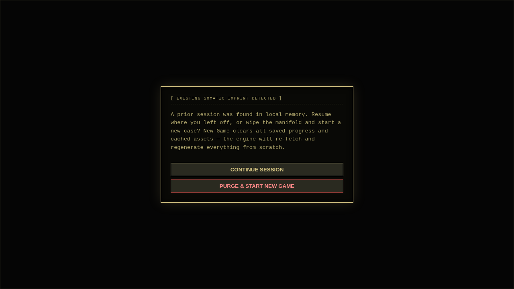

Level 0 Engine · Procedural Liminal Horror
The dark is not empty.
A procedural liminal-space horror game running natively in the browser on WebGL. The maze, textures, audio, and narrative are all generated at runtime from a seed. Find the breakers, settle the truth, and escape before your sanity fractures.
Zero-Dependency ES6 · Runs locally in the browser
SYS.STATUSONLINE
SECTORS13 MACRO
HAZARDSACTIVE
ENTITYROAMING
Architecture & Engine
Built for the web, native to the browser.
The engine runs entirely on native ES6 modules and WebGL via Three.js. O(1) Spatial Hash Grid collisions and zero-allocation scratch vectors maintain silky 60fps, while dynamic lighting uses a fixed hardware shadow-caster pool with hysteresis to eliminate popping.

The rules of the labyrinth
How to survive
The facility generated a unique cold case just for you. Find notes, laptops, and tapes to unravel it. Unverified documents burden your mind. You must corroborate claims by finding matching evidence in entirely different sectors.
-
0x01
Manage your sanity
The Flashlight
The dark is dangerous. Unverified claims and roaming in pitch black will accumulate as tension, reducing your maximum flashlight charge. Settle claims to restore your sanity limit. If your psyche fractures past 50%, expect hallucinations.
-
0x02
Avoid the hunter
The Anomaly
It hunts via line-of-sight and sound. It feeds on panic. The more exhausted you are, the faster it pursues. Catching it in your flashlight beam will freeze it in place, but it will anger it. If it catches you, reality will mutate and rebuild around a new cold case.
-
0x03
Survive the zones
Sector Hazards
Different zones harbor unique threats. In the Incinerator, don't look away from the Ember. In the Archive, the Archivist drifts at a distance. Don't sprint at it. In the Atrium, keep moving through the aisles — linger too long without a shelf overhead and a mechanical claw drops from the ceiling.
-
0x04
Restore the grid
Surge Breakers
To power the exit elevator, you must locate and engage three highly rare Dimensional Switches hidden in the labyrinth. Pulling a breaker plunges the sector into a pitch-black reboot sequence before stabilizing the grid.
-
0x05
Submit the truth
The Endgame
Once you have the breakers and the elevator key, the exit will dynamically construct itself in the next unvisited sector. The terminal demands the Finding of Fact. Submit the correct verdict based on the evidence. File the truth to escape; file wrong, and the void takes you.
Keep this nearby
The useful controls
The labyrinth demands constant movement and resource management.
A · Movement
Navigate
- W A S D
- Move
- Mouse
- Look
- Shift
- Sprint (Draws stamina)
- Space
- Jump
B · Interaction
Engage
- E
- Interact / Pick Up
- LMB
- Toggle Flashlight
- RMB
- Focus Beam (Burns charge rapidly)
- R
- Reload Flashlight Battery
C · Equipment
Tools
- J
- Open Personal Journal (Amber PDA)
- M
- Raise/lower Threshold Compass
- P
- Raise/lower Paintball Gun
- X
- Capture Asset (Screenshot)
D · System
Control
- V (Hold)
- Close Eyes (Calms nerves, blinds you)
- TAB
- Open System Terminal (Settings)
- ESC
- Release Pointer Lock / Pause
The Anomaly is waiting.